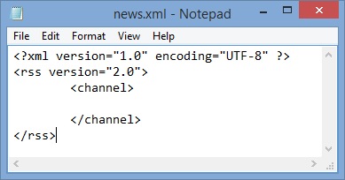
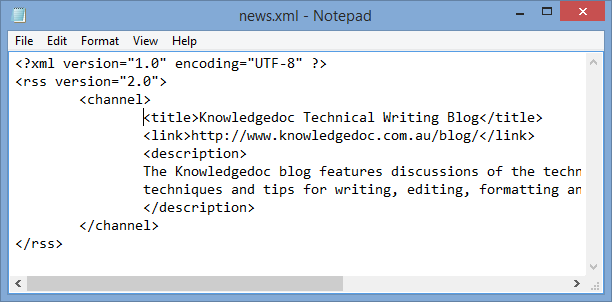
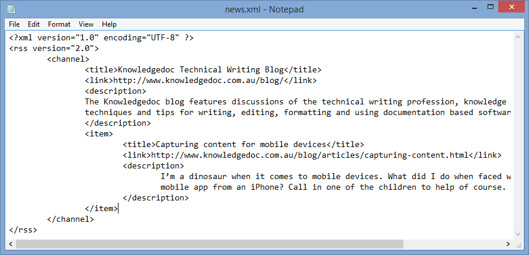

Creating an RSS feed for a website28/04/15

Rich Site Summaries, known as RSS feeds, are a great way to publish frequently updated information such as news or blog articles. In my last article I introduced you to RSS feeds. This article will discuss how to create and maintain an RSS feed on your website.
Start with your text editor of choice. Notepad will be sufficient but if you’re interested in a program with better functionality, Notepad++ is a free code editor.
Open up a blank text document in your text editor. Save your document as an .xml document. RSS is a specific type of XML document with a less rigid syntax. The file name itself isn’t very important, save it as something like news.xml or blog.xml.
At the top of the file put <?xml version="1.0" encoding="UTF-8" ?>. This tells browsers that this is an XML file and specifies the character encoding of the document.
Next specify that this is an RSS file, which is a specific type of xml file. Put in the tags <rss version="2.0"></rss>. Everything else you write will go between these tags.
Next put in a channel. A channel is the source of your RSS feed. Put the <channel></channel> tags between the RSS tags.
At the top of the channel you need to put the information about your RSS feed. This consists of a title, link to the homepage of your blog or news page and a short description of your site.
Below your RSS feed information put the title, link and description information for each of your articles inside item tags. There are a number of optional extra information items that you can include with your RSS feed, a list of these tags can be found at the RSS2 specification.
Repeat this for all your articles.
Validate your feed to make sure you’ve done everything correctly.
Upload your xml document to the root folder of your website directory.
Add a link to the head of all the pages on your website. For example <link href="http://www.knowledgedoc.com.au/blog.xml" rel="alternate" type="application/rss+xml" title="Knowledgedoc articles on technical writing" />.
Finally add a link to the homepage of your blog to advertise that an RSS feed is available to users! Our website uses an image link with the RSS icon, but a text link will work just as well.
Each time you add a new article to your website, just add the article to your xml file and upload the file to the internet and your followers will be notified of the new feed.